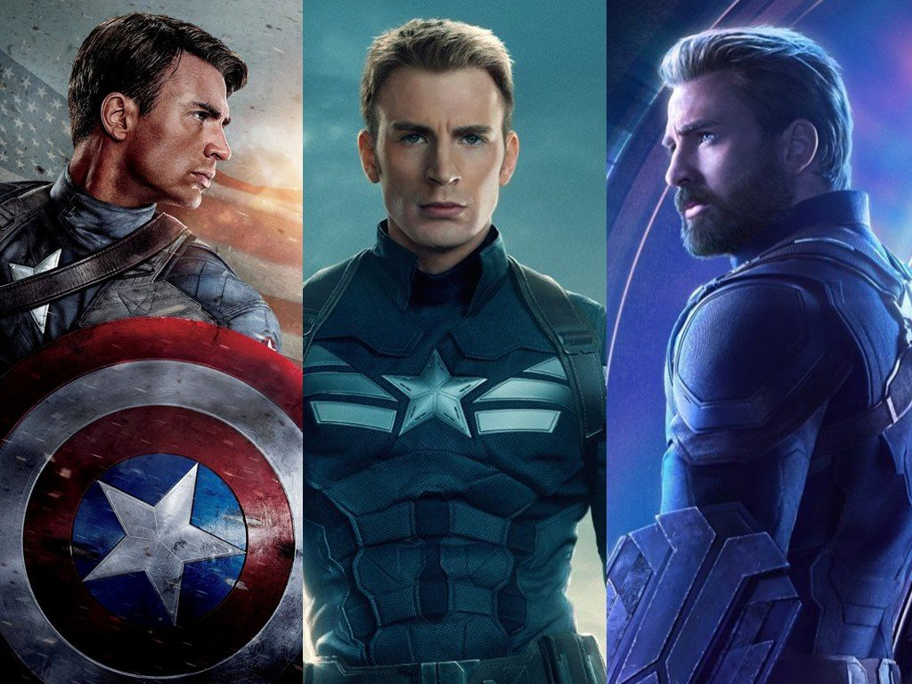
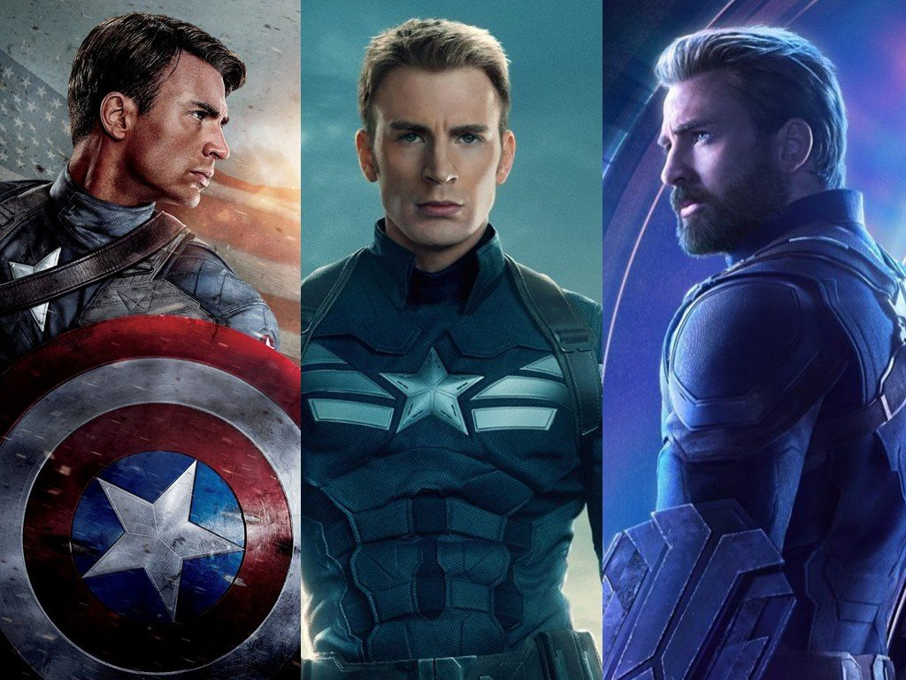
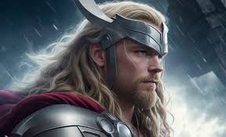
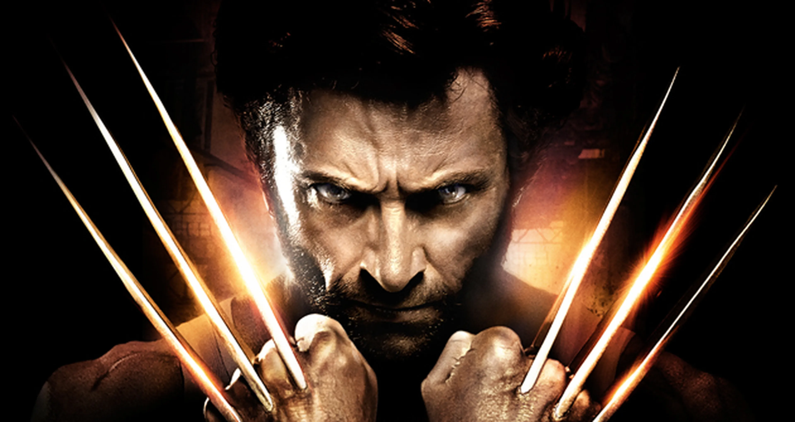
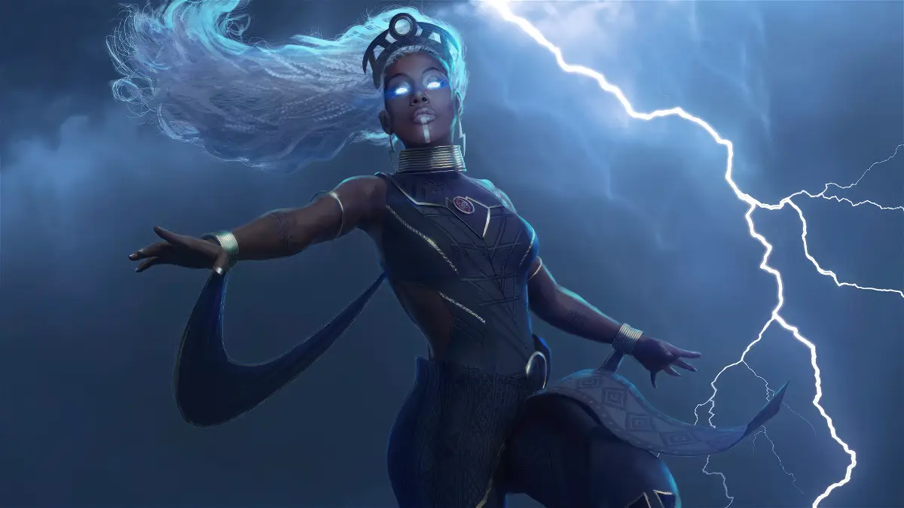

Capitan America
El Capitán América, cuyo nombre real es Steven "Steve" Grant Rogers, es un superhéroe ficticio que aparece en los cómics estadounidenses publicados por Marvel Comics
Capitan America
El Capitán América, cuyo nombre real es Steven "Steve" Grant Rogers, es un superhéroe ficticio que aparece en los cómics estadounidenses publicados por Marvel Comics
Thor
La tetralogía de Thor, basada en el personaje ficticio Thor de Marvel Comics, comprende cuatro películas de fantasía, superhéroes y ciencia ficción del Universo cinematográfico de Marvel: Thor, Thor: The Dark World, Thor: Ragnarok y Thor: Love and Thunder. Está conectada con la hexalogía de Los Vengadores
Lobezno
Lobezno, cuyo nombre de nacimiento es James Howlett, es un superhéroe y antihéroe ficticio que aparece en los cómics publicados por Marvel Comics, principalmente en asociación con los X-Men
Tormenta
Tormenta, alias de Ororo Iqadi Munroe, es una superheroína ficticia de la editorial estadounidense Marvel Comics. Esta superheroína apareció por primera vez en el cómic Giant-Size X-Men #1, y fue creada por el guionista Len Wein y el dibujante Dave Cockrum. La caracterizan sus ojos azules, pelo blanco y tez oscura
